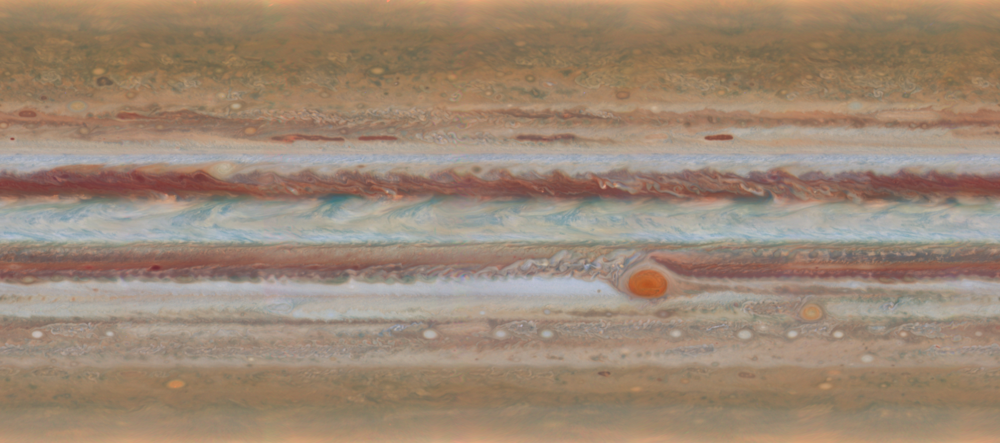

Jupiter / color panel
Turn Jupiter’s cloud bands into a layered print with 2–8 colors. The height represents color order, not planetary terrain.
Print color preview
Loading bundled Jupiter map…
Drag to orbit · scroll to zoom| Color | Start layer | Change at Z |
|---|
Original map and source

Hubble OPAL · 19 January 2015 · filter composite (395, 502, 631 nm). Full 3600 × 1598 image bundled for offline use; print preview is palette-reduced and removes diagonal-only contacts.
Credit: NASA, ESA, A. Simon (GSFC), M. Wong (UC Berkeley), and G. Orton (JPL-Caltech). Source and image details. No agency endorsement.